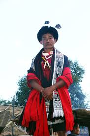

Tsungkotepsu
Tsungkotepsu is a traditional Ao warrier shawl. A variety of animal figures like that of Mithun (animal sacrifice), cock, human head, tiger, spear and elephant are printed on this cloth. All the characters printed on this shawl have particular importance. For example, the Mithun represents the wealth of the person wearing it; the Human head denotes the wearer’s success. Meanwhile, the pictures of the tiger and elephant define the tribe’s ability to hunt. All these patterns are usually black and printed on the top of the white band.